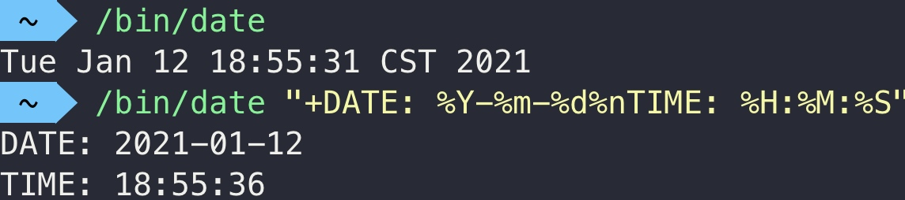

3 认识程序
二进制可执行文件和文本文件
这两种文件可以说是文件系统最基本的两种文件了
它们有什么不同呢？
计算机存储，本质都是0和1存储。我们先说文本文件吧：
文本文件：存的是字符，一个接一个的字符。每个字符都有一串0、1构成的编码。打开文本文件的时候，系统将这些编码挨个读出来就成为了文本文件。
什么是程序/二进制可执行文件
1 从汉语的概念来说：程序就是按照一定过程执行的东西
2 从用户使用/程序自身的性质的角度来说：（我的理解）input输入，output输出。在计算机里面：有输入、有输出就算程序。
参数是特殊的输入
执行某种操作是特殊的输出
举例子：（先说一下输入与输出的特点）
大家经常使用的可能是有图形界面的应用程序，也就是在应用程序文件夹中的后缀为.app的程序。我们先从这些大家熟悉的app入手，之后再说大家可能很少接触的二进制可执行文件
以备忘录为例：
键盘敲了一些字，屏幕上就显示了一行字（输入：敲键盘；输出：备忘录中多了一行字）
鼠标点击，在光标移动（输入：鼠标点击；输出：光标移动）
右键点击，出现辅助菜单（输入：带参数⌃的鼠标点击；输出：出现菜单）
点击新建一个列表，计算机就执行了新建一个列表的操作，新建了一个列表（输入：点击某个按钮/图标；输出：执行某个操作）
段落总结
我们简单总结一下：从使用的角度来看，有输入有输出就可以算作是一个程序。大家日常接触的就是在应用程序文件夹中的程序。输入会有普通的输入（点击），也有带参数的输入（右键，⌃点击）；输出有普通的输出（出现了一行字，显示了什么画面），也有特殊的输出——执行了某种操作
接下来我们要认识一些大家平常很少见的程序：二进制可执行文件。
3 从计算机底层的角度来说：程序就是一堆机器码（0、1），就是二进制可执行文件，计算机底层硬件（处理器）可以读取这些机器码然后实现相应的计算/进行相应的处理
引入终端
要跟这些程序/二进制可执行文件打交道，我们首先需要入门一下终端.app。从启动台打开（相当于在访达中找到终端.app然后双击打开）。
终端也是程序（接受你的字符串（命令）为输入，也会有一些输出），我们通过终端与一些没有图形界面的程序进行交互。
但是具体来说，终端提供的是一个输入命令（字符串）和输出提示（字符串）的环境，而shell则负责解析从终端输入的命令。
在计算机科学中，shell俗称壳（用来区别于核），是指“为使用者提供操作界面”的软件（命令解析器）。
它接收用户命令，然后调用相应的应用程序。
这一小节的标题是引入终端，我们这节课只是带大家初步认识终端，下节课我们会对终端和shell做更深入的了解
“它（shell）接收用户命令，然后调用相应的应用程序。”我们接下来就用终端通过shell调用一些没有图形界面的程序（二进制可执行文件），看看它们的输入输出都是什么
自己写的say_hello
（⌘I/空格看到图标上的exec）
（如何告诉shell我们要调用这个程序呢？写出它的路径就好了）
复制路径：右键，⌥；⌥⌘C；拖动到终端
（直观输入+直观输出：字符串）
/bin/date
显示日期
/bin/date
/bin/date "+DATE: %Y-%m-%d%nTIME: %H:%M:%S"
（直观输出，没有输入）
（添加参数）
/bin/mkdir
创建文件夹
接收一个参数/输入：将这个文件夹创建在哪里
在桌面创建newFolder
输出：执行了创建文件夹的操作
附
本节课所用可执行文件say_hello的C++代码文件
#include <cstdio>
int main() {
char name[100];
printf("Please input your name: ");
scanf("%s", name);
printf("Hello, %s", name);
}